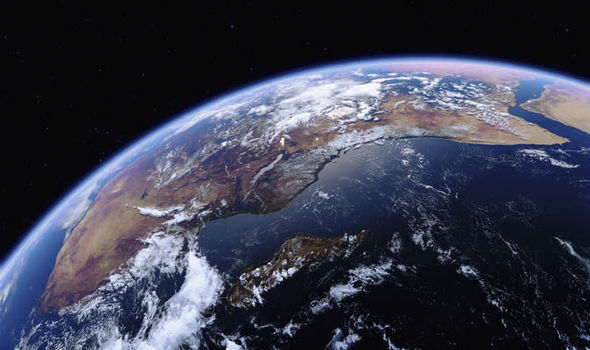
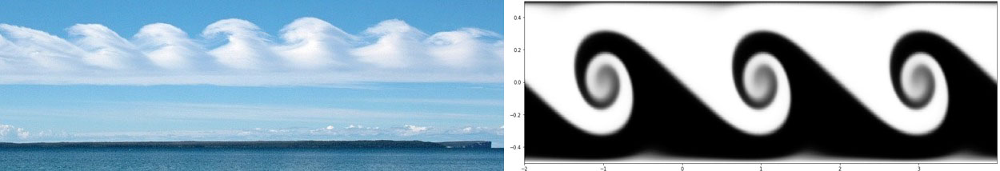
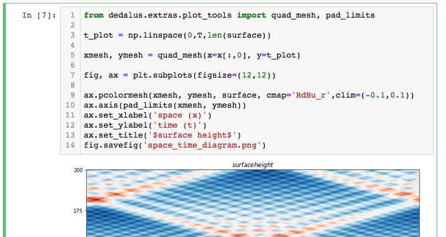
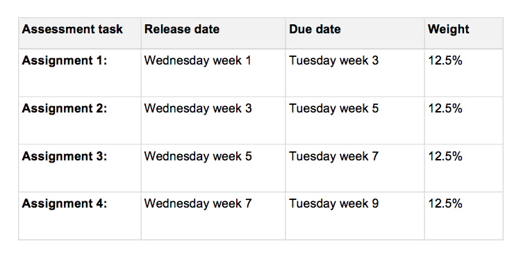

class: center, middle  .author[Fluids, Ocean, and Climate] .subtitle[MATH3261/5285] .institution[Term 1, 2019] .footnote[Created with [{Remark.js}](http://remarkjs.com/) using [{Markdown}](https://daringfireball.net/projects/markdown/) + [{MathJax}](https://www.mathjax.org/)] --- class: left # Philosophy of the course  - Applied maths (rather than physics) approach: find the simplest mathematical models that capture the essential behaviour - We will **not** simply look for analytic solutions to PDEs: instead, we will try to anticipate what the solutions **look like** - To build physical intuition, we will study observational data, laboratory experiments, and idealized fluid simulations to study and visualise fluid systems --- class: left ### Course learning outcomes By the end of this course you will - have an introductory understanding of the fluid dynamics, thermodynamics, and phenomenology of the climate system -- - simplify the equations of motion for typical dynamical phenomena using appropriate approximations, and understand the range of validity of these approximations -- - construct idealized models of the large-scale circulation of the atmosphere and the ocean, and understand their solution -- - perform and analyze numerical experiments of simplified models of geophysical fluid systems --- class: left ## Lectures - **Monday 4-6pm, OMB 230** - **Tuesday 4-5pm, RC 4082** ## Labs and tutorials On Tuesdays 11-1pm we will alternate between a 2-hour computer lab and a 2-hour tutorial - **Computer labs (Weeks 1,3,5,7,9)**: RC G12A - **Tutorials (Weeks 2,4,6,8,11)**: Ainsworth 202. [Note: Because of the Easter holiday, the Week 10 tutorial will be held in Week 11.] --- class: left ## Python computing labs  - We will use an open source Python package called [Dedalus](www.dedalus-project.org) to solve PDE models of atmosphere-ocean flows - you don't need experience with numerical modelling, just a little bit of [Python](https://www.python.org/) to run simulations and plot output. - we will run Python and Dedalus within [Jupyter Notebooks](http://jupyter.org/), a web-based interactive computational environment - you are encouraged to complete this [free online tutorial](https://www.codecademy.com/learn/learn-python) to familiarise yourself with Python syntax. --- class: center ### Assesments  --- class: left ## Assignments There is no substitute for pen and paper! You will complete 4 written assignments worth 50% of the final mark. Marks will be awarded for approach, clarity of explanation, and, as required, appropriate referencing, not just the final answer. Assignments should be submitted to the School of Mathematics office (Red Centre 3rd floor) before 12 noon on the due date. Late assignments will be penalized. Collaboration is permitted (in fact, encouraged) but you MUST submit your own work and acknowledge all contributers. Office hours will be posted on the course Moodle page. --- class: left ## Recommended textbooks You are not required to buy a textbook for this course: the lecture notes are complete. However, if you would like another reference, here are some excellent textbooks on fluid dynamics and atmosphere-ocean science. #### G.K. Vallis, [{Atmospheric and Oceanic Fluid Dynamics: Fundamentals and Large-Scale Circulation}](http://www.vallisbook.org/) - Excellent and comprehensive text on geophysical fluid dynamics and large-scale circulation of the atmosphere and ocean. #### J. Marshall and R.A. Plumb, [{Atmosphere, Ocean, and Climate Dynamics: an Introductory Text}](https://www.elsevier.com/books/atmosphere-ocean-and-climate-dynamics/marshall/978-0-08-055670-3) - Good mid-level text based on undergraduate course taught at MIT. #### B. Cushman-Roisin, [{Introduction to Geophysical Fluid Dynamics}](https://www.amazon.com/exec/obidos/tg/detail/-/0133533018/102-1276299-7780909?v=glance) - Introductory level text, particularly good for physical understanding. --- class: left, middle ## Curriculum ### Topic 1: Rotating, stratified, and thin - Kinematics in a rotating frame, fundamentals of fluid dynamics, hydrostatic, geostrophic and thermal wind balance ### Topic 2: The shallow water model - The shallow water model, reduced gravity, layer models, vorticity and potential vorticity, shallow water waves ### Topic 3: Geophysical fluid dynamics - Scaling theory, quasigeostrophic model, Rossby waves --- class: left, middle ### Topic 4: Atmospheric circulation - Overview of the general circulation of the atmosphere, the Hadley cell, baroclinic instability in the two-layer model ### Topic 5: Ocean circulation - Overview of the general circulation of the ocean, the Ekman layer and Ekman pumping, the wind-driven circulation, western intensification